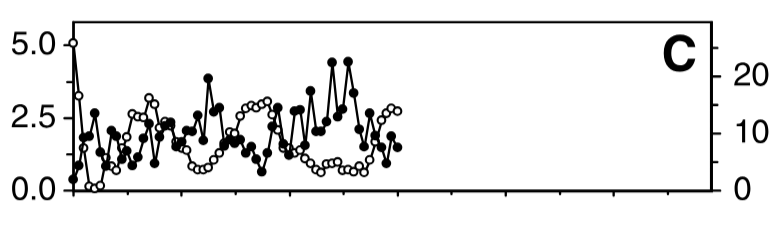
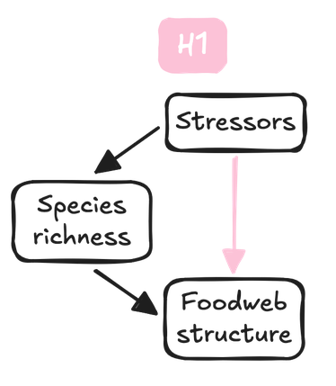
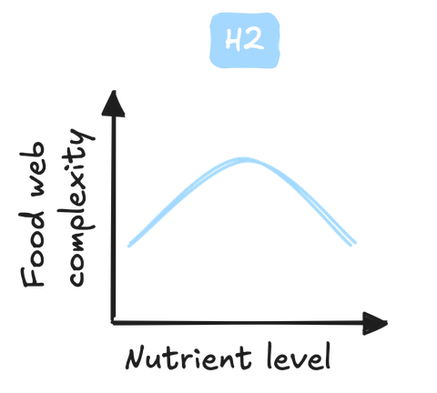

How damming and nutrient enrichment alter food web structure along the river-sea continuum
A case study on the river continuum
September 10, 2026
A connected but siloed continuum
- Rivers, estuaries and seas are connected
- flux of nutrients, migration of species
- Yet they are often studied in isolation
- freshwater vs marine ecology, separate surveys, …

Kavanaugh et al. (2013); Figure from CNES (2020)
Capturing changes with food webs
At a local scale
- Who eats whom: energy and matter fluxes
- Understanding the paradox of enrichment
- Enrichment leads to consumer-resource cycles
- Make sense through a food web lens
- We understand this locally
And, at a global scale?


Hypotheses
- H1: Pressures act in part through direct and richness-mediated effects
- H2: Nutrients have a unimodal effect on food web structure
- H3: Dam effect decays with distance to river mouth
- First dams block piscivorous migratory species moving upstream

Fish survey data

- 3 surveys harmonized
- ASPE (river, OFB), Pomet (estuary, INRAE), Nurse (sea, IFREMER)
- Species names, units and fish lengths standardized
- Missing lengths imputed from observed length distributions
Metaweb

- Represents potential interactions, not realized ones
- Limitations
- Binary links: no interaction strength or frequency
- Piscivory inferred from a body-length heuristic
- No direct observations
- Same metaweb assumed across the whole continuum
Subsample to get local webs.
Examples of reconstructed food webs

A few observations
- Estuary: simpler community – stressed environment, less species
- Coast: benthic flatfishs with large diet breadth
- River: large piscivorous species
Quantifying food web structure
What we measure
- Richness: how many species
- Connectance: how connected (link density) is the food web
- Trophic length: how long is the food web
Quantifying nutrient indicators
Nitrate and phosphate concentrations
- In river, we relied on the AMOBIO dataset (Naïades)
- Nearest neighbor interpolation
- In estuaries and coasts, we used REPHY
- Interpolated with
INLA - Mesh; random gaussian field; correlation decreasing with distance
- Interpolated with

Warning
Work in progress: nutrient definitions are not yet fully consistent between AMOBIO and REPHY.
Positions along the continuum
The solution
- Distance to river mouth operation
- River: shortest path along the hydrographic network
- Sea: shortest path along a coastal mesh (
INLA) excluding land

Note
We also added operation elevation and river width, when available.
Designing statistical models
- 3 models:
- richness (S) – Gaussian model
- connectance (C) – Beta log-link (bounded between 0 and 1)
- trophic length (TL) – two step model (ordinal & conditional Gaussian)
- H1: species richness included as a covariate for C and TL
- H2: quadratic terms for nitrate and phosphate
- H3: dam barrier effects interact with distance to mouth
Designing statistical models
- 3 models:
- richness (S) – Gaussian model
- connectance (C) – Beta log-link (bounded between 0 and 1)
- trophic length (TL) – two step model (ordinal & conditional Gaussian)
- H1: species richness included as a covariate for C and TL
- H2: quadratic terms for nitrate and phosphate
- H3: dam barrier effects interact with distance to mouth
Drivers of food web connectance


- Richness partly mediate stressors impact on structure: H1 validated
- Nutrients have opposite direct effects
- Dams have no average direct effects
What about interaction terms? N:N, P:P, dam:distance
Effect of nutrients on connectance


- Phosphate has the expected unimodal effect on connectance
- Nitrate has the opposite trend than expected
- Could be explained by the limiting nutrient (see discussion)